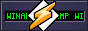
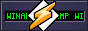

Wywietl podstawowe informacje o xdeku
Siema, jestem xdek. Mam 15 lat, i jestem oczywicie z Polski 叼. Lubie robi rzeczy zwizane z technologi, takie jak naprawa ich, zbieranie starych telefonłów, lub robienie modyfikacji systemłów Windows, takich jak Relive7. Aktualnie nie umiem programowa, wic wikszo rzeczy poprostu biore, lecz chc si tego nauczy (najbardziej C++/C#). (a i jakby co to strona jest zrobiona przez patricktbp, wic od razu o nim wspominam aby nie byo)

Aktualnie to za bardzo nic nie robie, lecz wziem si za ponownie robienie modyfikacji Windows dla The Relive Team, lecz tak偶e zajem si zbieraniem starych telefonłów takich jak r贸偶ne Lumie, lub starsze iPhony (najlepiej na starym iOSie, gdzie ostatnio zostaem oscamowany na 6sa z Japonii ).
Mo偶esz mnie znale na moim YouTube, The Relive Team (Discord), GitHub, i oczywicie na tej stronie, lecz jeli chcesz, mo偶esz wysa maila na młój adres mailowy (preferowany jest kontakt przez discorda, wic nie spodziewaj si jak po tygodniu nie dostaniesz odzewu XD)
Jeli chcesz mnie wesprze, to mo偶esz da darowizn poprzez młój profil Ko-fi, ale to ju偶 zale偶y w peni od ciebie, lecz bardzo tak darowizn docenie!


 
